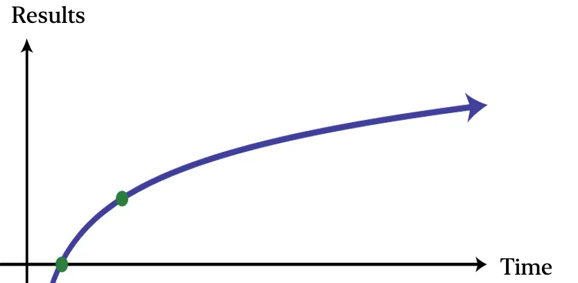
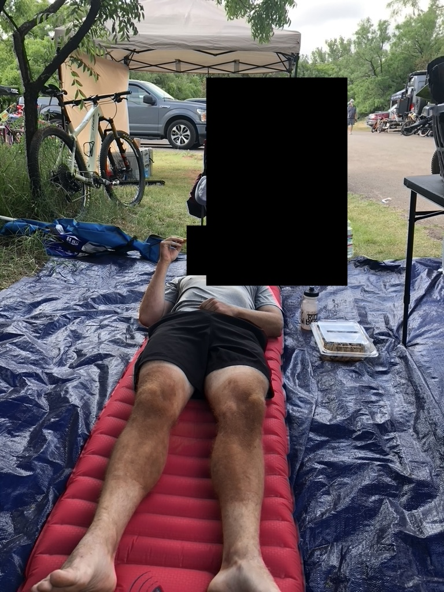

Pain and reward are guaranteed, success is not.
This essay was written in motivation by and response to Joshua Derrick's Working with Time & not Against it.
The type of "long-term athletic endeavor" referred to here has a few different qualifiers.
First, the LTAE takes multiple years—sometimes even decades—to achieve when starting from scratch and working diligently. It should not be able to be achieved in less than two years unless the starting point is already somewhat advanced.
Second, the LTAE should be considered to be a major achievement in an absolute sense within a given population (e.g., age, gender, etc). (I'm a bit iffy on this and think an argument could be made for just looking at the person's improvement relative to their starting point.) The overweight person running a 5k without stopping can still get a pat on the back, but not in the same way someone running an 18-minute 5k should.
Third, the LTAE should rely mostly on raw effort instead of skill. Cycling, running, and ski mountaineering all qualify. Fencing, skateboarding, and gymnastics don't qualify (and I was a pseudo gymnast when I was younger!). Consistent, enduring discomfort is an important factor that only effort-focused disciplines can provide in the doses needed.

Here are some specific LTAEs that I think are probably achievable, if not very close to, for the average male given ample time, effort, and intelligent planning (exceptions exist):
What makes LTAEs different than other long-term efforts, like building a company or rising through career ranks?
LTAEs require consistency in all angles of attack: training, nutrition, recovery, stress management. Lack of focus in any one of these can and will cause stagnation or even regression if the player isn't careful and vigilant.
Consistent pressure on a car's gas pedal results in the most efficient journey, where even the smallest slip up can lose time and requires acceleration later that can wastes energy. The same is true of LTAEs.
Recognize and accept that multi-year consistency is necessary.
Long-term goals require long-term planning. As Boromir wisely said, "one does not simply plan their training for the next month; they plan for the next year". This necessitates a birds-eye view of the goal and the process of getting there, prompting questions like "is the process sustainable?" and "is the process conducive to my lifestyle?". By spreading out the process over the course of years, the answers cannot be faked; if they are, the player will meet their day of reckoning soon thereafter and almost certainly before they achieve anything of value.
Recognize and accept that multi-year planning is necessary.
Patience remains and will remain a virtue across all domains. Rarely is exercising and honing patience a bad thing. The player is taught to stay the course and trust the process.
Recognize and accept that patience is necessary and impatience will cause unnecessary discomfort, stagnation, or even regression.
(As in discomfort felt during exercise, not pain pain.)
Experiencing and learning to deal with pain and discomfort is valuable. The more time spent in uncomfortable positions the more durable one becomes to them.
Recognize and accept that pain will be felt in multiple domains: physical, mental, social.
Pursuing—and ultimately achieving—a LTAE forces sacrifice and prioritization in a way others endeavors often don't. Rarely is choosing to go home early to go to bed early to wake up early to train a fun thing; the fear of missing out is hanging over your head along with the dread of the early morning pain that inevitably awaits.
But the intentional choice of the uncomfortable option at the sacrifice of a comfortable option is where the value comes from. Too often the question is "which [comfortable] option do I want more?".
Recognize and accept that sacrifices must be made.
Many people choose completing a marathon as their LTAE (which, if I'm being an elitist, isn't the length I'm looking for). It's a fairly long event for those who don't exercise all that often; they're accessible no matter where you live; everyone knows what it is; it sounds (and sometimes is) impressive. And even if the length isn't up to my par, it sure is to them, as evident by their frequent crying after they finish and the sense of accomplishment they feel and talk about.

Seeing someone cross the finish line and realize what they've just done is beautiful in its own right. The wave of exhaustion and satisfaction washes over their face as they come to terms that the consistency paid off, the plan worked, the patience and pain and sacrifice weren't for nothing. They realize that they did just do that, they just achieved the goal that seemed insurmountable not that long ago through the training that seemed unsustainable not that long ago. It is possible! The ingredients are available in essentially infinite doses to those who want more.
Who am I to talk about LTAEs? What have I accomplished? Nothing like I'm proposing. I've gotten some decently strong lifts and fitness on the bike, but I've always lacked the most important part of LTAEs: consistency. I can endure pain and long wait times and boring planning sessions and the hurt of sacrificing social and professional growth, but for whatever reason consistency eludes me despite my efforts to fix the deficiency. (To be fair to myself, I'm probably underestimating the strength and aerobic bases I built over many, many years, but the point still stands.)
So let this be a lesson: determine which requirements are difficult to adhere to and fix them before turning wheels in the mud of stagnation and frustration.
My list of LTAEs: